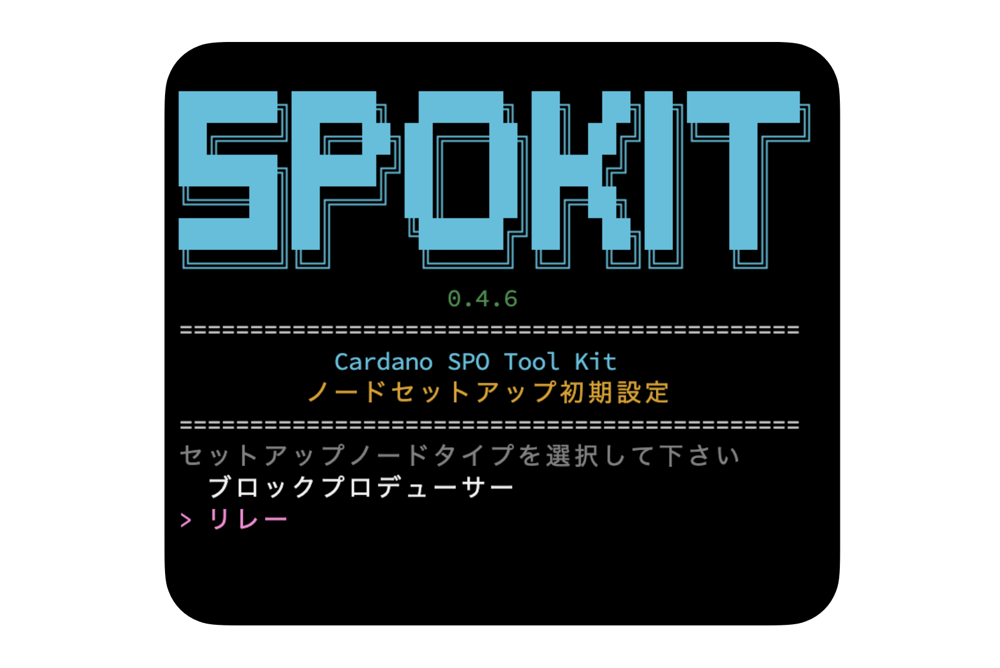
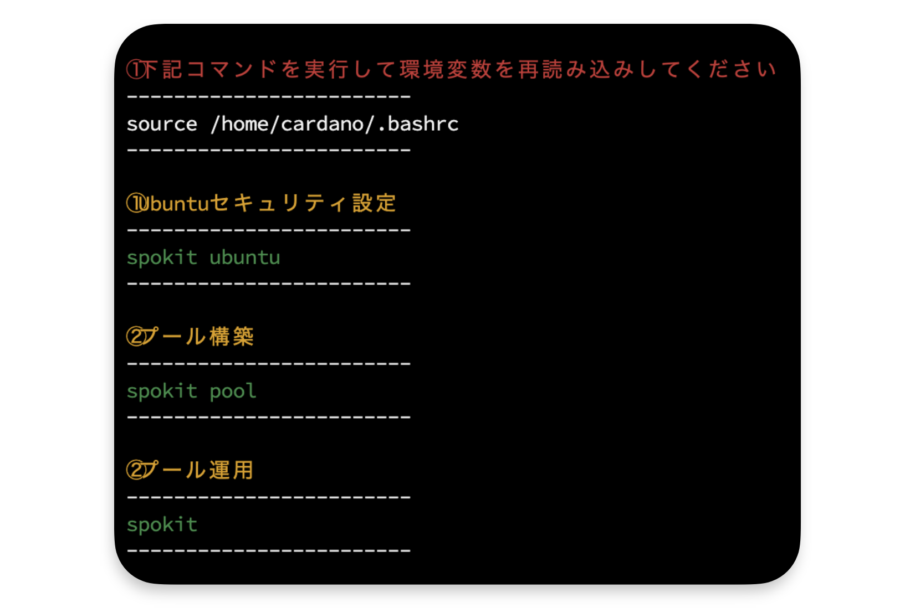
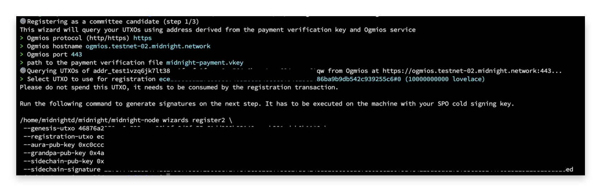
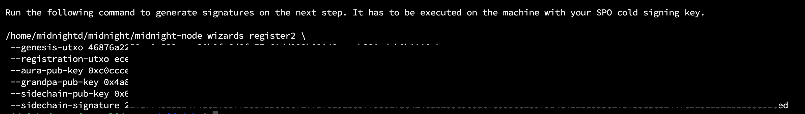
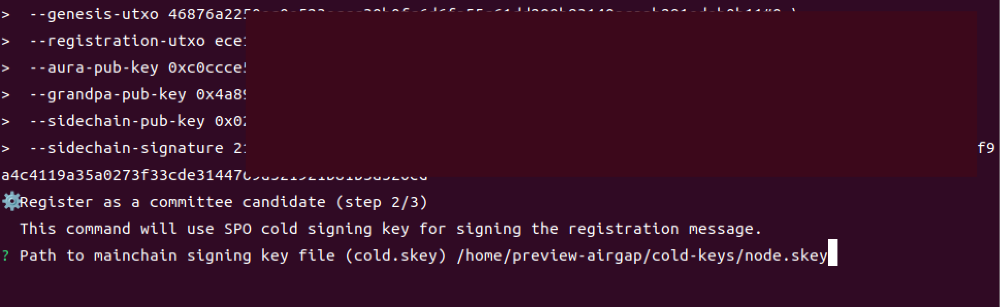
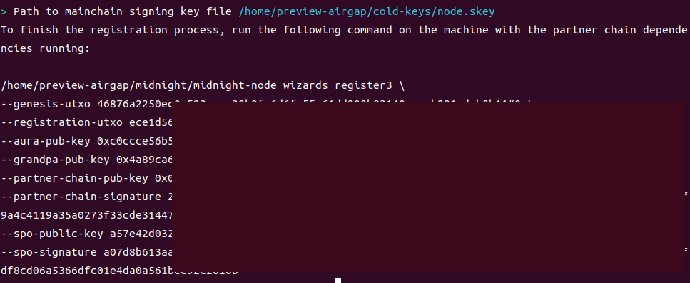
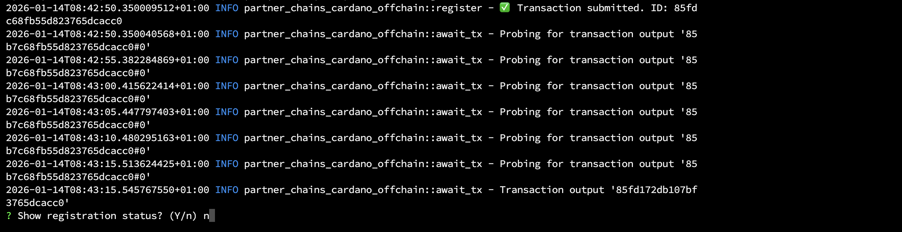

Midnightノード稼働サーバー構築¶
本ドキュメントは、Midnightバリデーターサーバーで行うMidnight-node用サーバー構築とSPOバリデーター登録の手順です。
事前準備¶
本マニュアルではエアギャップマシンとMidnightサーバーを使用して手順を進めていきます。
サーバーでの事前準備
日常運用ではrootアカウントを使用せず、sudo権限を付与した一般ユーザーで操作します。
新しいユーザーを作成します。
任意のアルファベット文字を入力してください。
この例ではmidnightdユーザーとして以降進めます。
adduser midnightd
New password: # パスワードを設定
Retype new password: # 確認のため再入力
Enter the new value, or press ENTER for the default
Full Name []: # フルネーム等の情報を設定（不要であればブランクでも問題ありません）
Room Number []:
Work Phone []:
Home Phone []:
Other []:
Is the information correct? [Y/n] : y
midnightdにsudo権限を付与します。
usermod -aG sudo midnightd
rootからログアウトします。
exit
ヒント
ターミナルソフトの接続ユーザーを、上記で作成したユーザー名（midnightd）およびパスワードに変更して再接続してください。
1. SPOKIT導入設定¶
1-1. 初期設定¶
パスワード入力について
管理者権限パスワードを求められた場合は、ユーザー作成時に設定したパスワードを入力してください。
-
SPOKITを導入してUbuntuセキュリティ設定のみ行います。wget -qO- https://spokit.spojapanguild.net/install.sh | bashキーボードの
↑と↓、←と→でカーソルを移動できます。 -
セットアップノードタイプでは「
リレー」を選択して Enter  -
接続ネットワークでは「
Preview-Testnet」を選択して Enter
-
作業ディレクトリPATHは、デフォルトを指定するのでそのまま Enter
-
「
はい」を選択し、 Enter -
「
source」コマンドを必ず実行してください。

1-2. Ubuntuセキュリティ設定¶
Ubuntuセキュリティ設定モードについて
このモードでは、Cardanoノード実行に推奨されるUbuntuセキュリティ設定が含まれています。
-
以下のコマンドを実行します。
実行コマンドspokit ubuntu「
Enter...」と表示されたら Enter キーを押下し、以降はスクリプトの指示に従って設定してください。
デフォルトは「はい」を選択します。 -
上記設定後、不要なディレクトリを削除します。
rm -rf $HOME/cnode
ヒント
ブラケットモード無効化を反映させるために一度ターミナルを閉じて、その後再接続してください。
exit
2. midnight-nodeインストール¶
2-1. 環境変数設定¶
設定
grep -q '^export MIDNIGHT_NETWORK=' "$HOME/.bashrc" || printf '\nexport MIDNIGHT_NETWORK=testnet-02\n' >> "$HOME/.bashrc"
source "$HOME/.bashrc"
2-2. midnight-nodeダウンロード¶
mkdir -p $HOME/midnight
cd $HOME/midnight
wget -q --show-progress https://spojapanguild.net/node_config/midnight/${MIDNIGHT_NETWORK}/midnight-node0.12.0.gz
midnight-node解凍
gunzip -c midnight-node0.12.0.gz > midnight-node && rm midnight-node0.12.0.gz
chmod +x midnight-node
バージョン確認
./midnight-node --version
midnight-node 0.12.0
設定ファイルダウンロード
wget -q --show-progress https://spojapanguild.net/node_config/midnight/${MIDNIGHT_NETWORK}/pc-chain-config.json
wget -q --show-progress https://spojapanguild.net/node_config/midnight/${MIDNIGHT_NETWORK}/chain-spec.json
wget -q --show-progress https://spojapanguild.net/node_config/midnight/${MIDNIGHT_NETWORK}/addresses.json
3. 鍵・アドレスの生成¶
3-1. 支払い用鍵の生成¶
環境変数の設定後、支払い用鍵を生成
grep -q '^export MIDNIGHT_NETWORK=' "$HOME/.bashrc" || printf '\nexport MIDNIGHT_NETWORK=testnet-02\n' >> "$HOME/.bashrc"
source "$HOME/.bashrc"
mkdir -p $HOME/midnight
cd $HOME/midnight
cardano-cli conway address key-gen \
--verification-key-file midnight-payment.vkey \
--signing-key-file midnight-payment.skey
midnight-paymentペアキーについて
セキュリティを考慮して、ここで生成したmidnight-paymentペアキーはカルダノステークプールに紐づくpaymentペアキーとは別のものになります。別途バックアップを推奨します。
3-2. パートナーチェーン用鍵の生成¶
ファイル転送
Midnightサーバーで取得した以下のファイル郡をエアギャップの$HOME/midnightディレクトリへコピーします。
addresses.jsonchain-spec.jsonmidnight-nodepc-chain-config.json
cd $HOME/midnight
chmod +x midnight-node
./midnight-node --version
midnight-node 0.12.0
パートナーチェーン用の鍵を生成
CFG_PRESET=${MIDNIGHT_NETWORK} ./midnight-node wizards generate-keys
$HOME/midnightディレクトリに保存するのでそのまま Enter
This 🧙 wizard will generate the following keys and save them to your node's keystore:
→ an ECDSA Cross-chain key
→ an ED25519 Grandpa key
→ an SR25519 Aura key
It will also generate a network key for your node if needed.
? node base path (./data) ←ここでEnter
data/
└── chains
└── undeployed
├── keystore
│ ├── 6175728281... # sidechain key
│ ├── 63726367cd... # aura key
│ └── 677a322ca6... # grandpa key
└── network
└── secret_ed25519 # network (node) key
$HOME/midnight配下に./dataが作成されます。
ディレクトリ名の変更
mv ./data/chains/undeployed/ ./data/chains/partner_chains_template
3-3. 支払い用エンタープライズアドレス作成¶
エンタープライズアドレスの生成
cd $HOME/midnight
cardano-cli conway address build \
$NODE_NETWORK \
--payment-verification-key-file midnight-payment.vkey \
--out-file midnight-payment.addr
ファイル転送
エアギャップから、以下の内容一式をMidnightサーバーの$HOME/midnightディレクトリにコピーします。
datamidnight-payment.addrmidnight-payment.skeymidnight-payment.vkeypartner-chains-public-keys.jsonpc-resources-config.json
tADA FaucetからtADAを以下のエンタープライズアドレスに送金します。
cd $HOME/midnight
echo $(cat midnight-payment.addr)
入金を確認するため、preview.cardanoscanなどのエクスプローラーで支払いアドレスを検索し、tADAが届いていることを確認してください。
4. バリデーター登録¶
4-1. 登録ウィザード 1¶
事前説明：register1 実行時の入力内容
以下は、register1 実行時に表示される入力項目の全体像です。
実際の入力は次のセクションを参照し、ここでは流れを把握してください。

- 登録ウィザード 1 のコマンド実行
> Ogmios protocol (http/https)→https> Ogmios hostname (localhost)→ogmios.testnet-02.midnight.network> Ogmios port→443> path to the payment verification file→midnight-payment.vkey? Select UTXO to use for registration→ Entermidnight-node wizards register2のコマンドが出力されるのでメモ帳などにコピー
-
以下のコマンドを実行します。
cd $HOME/midnight CFG_PRESET=${MIDNIGHT_NETWORK} ./midnight-node wizards register1 -
> Ogmios protocol (http/https)では、httpsを選択して Enterhttp > https -
> Ogmios hostname (localhost)では、以下のエンドポイントを入力して Enterogmios.testnet-02.midnight.network -
> Ogmios portでは、443を入力して Enter443 -
> path to the payment verification fileでは、以下を入力して Entermidnight-payment.vkey
-
? Select UTXO to use for registrationでは、そのまま Enter -
出力された
register2のコマンドを、すべて Copy します。 コピーしたコマンドをメモ帳などに貼り付け保存してください。
4-2. 登録ウィザード 2¶
事前説明：register2 実行時の入力内容
以下は、register2 実行時に表示される入力項目の全体像です。
実際の入力は次のセクションを参照し、ここでは流れを把握してください。
- エアギャップの
$HOME/cold-keysディレクトリのロック解除し、$HOME/midnightディレクトリに移動 - プールの秘密鍵ファイルの絶対パスを表示し、控えておく
- 登録ウィザード 2 のコマンド実行
- プールの秘密鍵ファイルの絶対パスを入力
midnight-node wizards register3のコマンドが出力されるのでメモ帳などにコピー$HOME/cold-keysディレクトリのロックします。
-
$HOME/cold-keysディレクトリのロックを解除し、$HOME/midnightディレクトリに移動します。chmod u+rwx $HOME/cold-keyscd $HOME/midnight -
プールの秘密鍵ファイルの絶対パスを表示します。
echo $HOME/cold-keys/node.skey/home/$USER/cold-keys/node.skey
表示されたパスをメモ帳などにコピーして控えておいてください。 -
register1でコピーしたコマンドの/home/$USER/midnightを削除してCFG_PRESET=${MIDNIGHT_NETWORK} .に書き換えて実行してください。参考コマンドCFG_PRESET=${MIDNIGHT_NETWORK} ./midnight-node wizards register2 \ --genesis-utxo 46876a2250ec0e523eccc30b0fc6d6fa55c61dd200b83140acaab291edeb0b11#0 \ --registration-utxo d7ebd0b5f215ede15d25fc00c5e9fbfb24b36ffdf428f93fc83cde84440be376#0 \ --aura-pub-key 0x0a66c6e1ca29d332a3b1738471bb4f27d4425b3001bbc9003757c2213b40b508 \ --grandpa-pub-key 0xca364cd1c9a63988d9da8adc5e336220ee93fc6b9d65bca280133a55e21dc5f1 \ --sidechain-pub-key 0x03de3d4544b1789d22aae9b4ae24d9e85282a300f690f7c0a534434f7f62362153 \ --sidechain-signature d03d7900805e9aeb465278ca2f67465521d8c2abc680a5650e85105f407825df75de19df6cc45bac92b66250ccd2b51e3d93922925aa7e09f3b0a3e53bf7763b -
node.skeyのPATHを入力して Enter参考/home/$USER/cold-keys/node.skey -
出力された
register3のコマンドを、すべて Copy します。 コピーしたコマンドをメモ帳などに貼り付け保存してください。
-
$HOME/cold-keysディレクトリのロックします。chmod a-rwx $HOME/cold-keys
4-3. 登録ウィザード 3¶
事前説明：register3 実行時の入力内容
以下は、register3 実行時に表示される入力項目の全体像です。
実際の入力は次のセクションを参照し、ここでは流れを把握してください。
$HOME/midnightディレクトリに移動- 登録ウィザード 3 のコマンド実行
? Path to mainchain payment signing key file→midnight-payment.skey> Ogmios protocol (http/https)→https> Ogmios hostname (localhost)→ogmios.testnet-02.midnight.network> Ogmios port→443Show registration status?(Y/n)が表示されたらnを入力
その後オンチェーン登録確認
-
$HOME/midnightディレクトリに移動cd $HOME/midnight -
コピーしたコマンドの
/home/$USER/midnightを削除してCFG_PRESET=${MIDNIGHT_NETWORK} .に書き換えて実行してください。参考コマンドCFG_PRESET=${MIDNIGHT_NETWORK} ./midnight-node wizards register3 \ --genesis-utxo 46876a2250ec0e523eccc30b0fc6d6fa55c61dd200b83140acaab291edeb0b11#0 \ --registration-utxo d7ebd0b5f215ede15d25fc00c5e9fbfb24b36ffdf428f93fc83cde84440be376#0 \ --aura-pub-key 0x0a66c6e1ca29d332a3b1738471bb4f27d4425b3001bbc9003757c2213b40b508 \ --grandpa-pub-key 0xca364cd1c9a63988d9da8adc5e336220ee93fc6b9d65bca280133a55e21dc5f1 \ --partner-chain-pub-key 0x03de3d4544b1789d22aae9b4ae24d9e85282a300f690f7c0a534434f7f62362153 \ --partner-chain-signature d03d7900805e9aeb465278ca2f67465521d8c2abc680a5650e85105f407825df75de19df6cc45bac92b66250ccd2b51e3d93922925aa7e09f3b0a3e53bf7763b \ --spo-public-key 7ca8511e4b96c6d443304753685ea89660212e556a2c3c903fb10c99df292a72 \ --spo-signature 019ec2205223ba0f47a26f3e732e2c00e623eb1af546339a36c8136a792d37c6f2d36e76efa03a401e0be6559488d94e09368257f19886be95f8496f56460803 -
? Path to mainchain payment signing key fileでは、以下を入力して Entermidnight-payment.skey
-
Ogmios protocolでは
httpsを選択して Enterhttp > https -
Ogmios hostnameでは以下のエンドポイントを入力して Enter
ogmios.testnet-02.midnight.network -
Ogmios portでは
443を入力して Enter443 -
Show registration status?(Y/n)が表示されるまで少し待ち、表示されたらnを入力後 Enter 
5. オンチェーン登録確認¶
エポック確認
NEXT_EPOCH=$(curl -s -L -X POST -H "Content-Type: application/json" -d '{
"jsonrpc": "2.0",
"method": "sidechain_getStatus",
"params": [],
"id": 1
}' https://rpc.${MIDNIGHT_NETWORK}.midnight.network \
| jq '.result.mainchain.epoch + 2')
echo $NEXT_EPOCH
登録確認
SIDECHAIN_KEY=$(jq -r '.sidechain_pub_key' ${HOME}/midnight/partner-chains-public-keys.json)
curl -s -L -X POST -H "Content-Type: application/json" -d "{
\"jsonrpc\": \"2.0\",
\"method\": \"sidechain_getAriadneParameters\",
\"params\": [$NEXT_EPOCH],
\"id\": 1
}" https://rpc.${MIDNIGHT_NETWORK}.midnight.network \
| jq --arg key "$SIDECHAIN_KEY" '
.result.candidateRegistrations
| to_entries[]
| . as $e
| $e.value[]
| select(.sidechainPubKey == $key)
| {
mainchainPubKey: $e.key,
sidechainPubKey,
auraPubKey,
grandpaPubKey,
stakeDelegation,
isValid
}
'
"isValid": trueが確認できれば、問題ありません。
{
"mainchainPubKey": "***************",
"sidechainPubKey": "***************",
"auraPubKey": "***************",
"grandpaPubKey": "***************",
"stakeDelegation": ***************,
"isValid": true
}
isValid: falseと表示されている場合
アクティブステークが 0 の場合、isValid: false となるため、以下を確認してください。
Cardano ステークプールの有効ステーク確認方法
-
SPOKIT の場合：
spokit> 「プール情報管理」> 「ブロック生成状態チェック」> 有効ステーク値 -
Cardanoscan の場合:
自身のPool IDを検索し、Active Stakeの値を確認
Active Stakeの反映タイミング (n + 2エポック)
反映までの目安：
Previewネットワークでは約 2 日後、メインネットでは約 10 日後に反映されます。